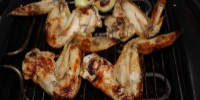

Pagina Inicial
Asa de Morcego Crocante

Ingredientes:
- 1 pacote de Asa de Morcego com a coxinha (1kg);
- 1\2 cebola
- 50g de maionese
- Uma colher de chá de corante
- 2 dente de alho;-
- Sal a gosto;
- Limão.
Modo de Preparo:
- Limpe as asas caso seja necessário, e não separe a asa da coxinha e coloque em uma vasilha na qual possa deixar marinar;
- Rale a cebola, amasse o alho e retire o suco do limão e reserve;
- Junte as asinhas, o alho amassado, a cebola ralada, a maionese, o suco do limão, o corante e o sal a gosto;
- Misture bem todos os ingrediente e deixe descansar uns 30 minutos. Depois é só assar no forno em na churrasqueira, deixe assar até dourar.